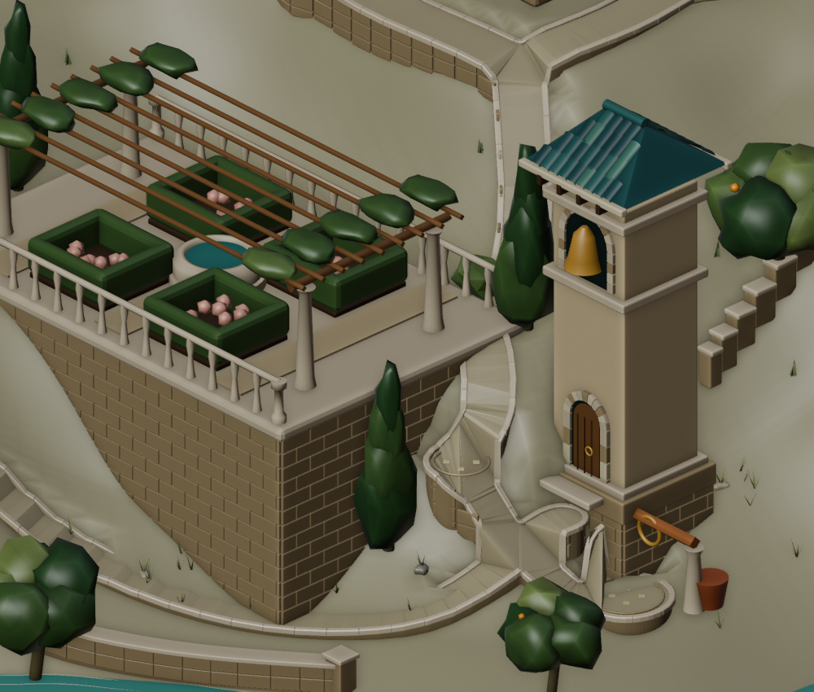
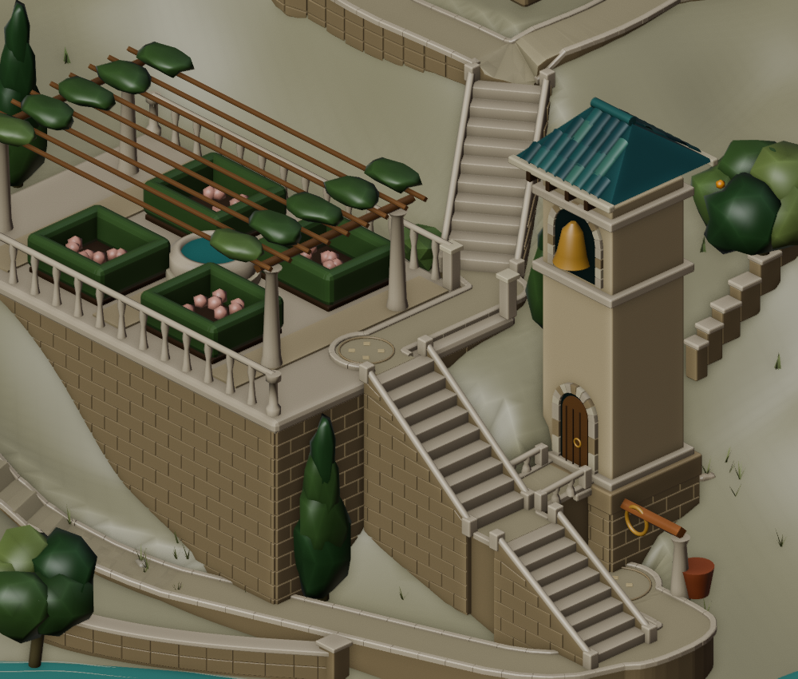
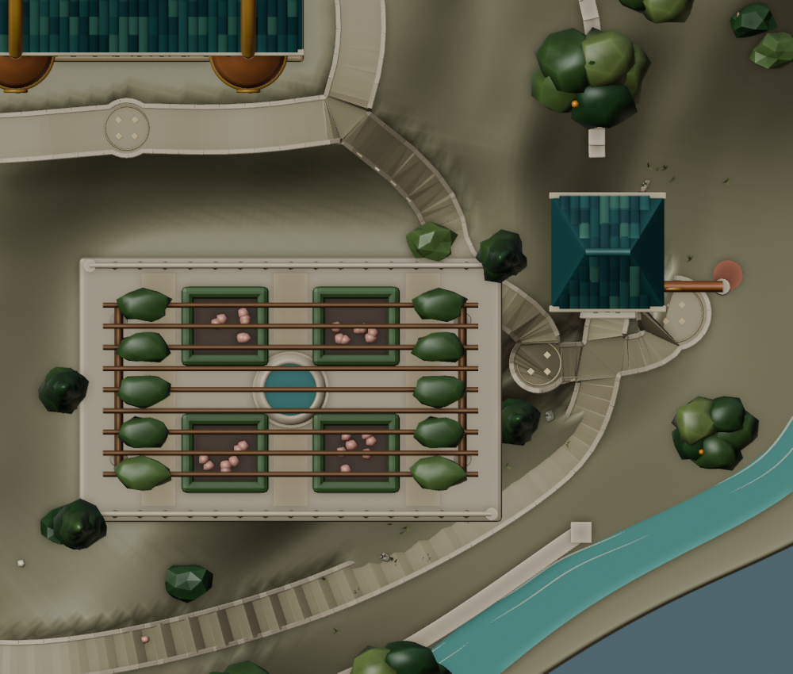
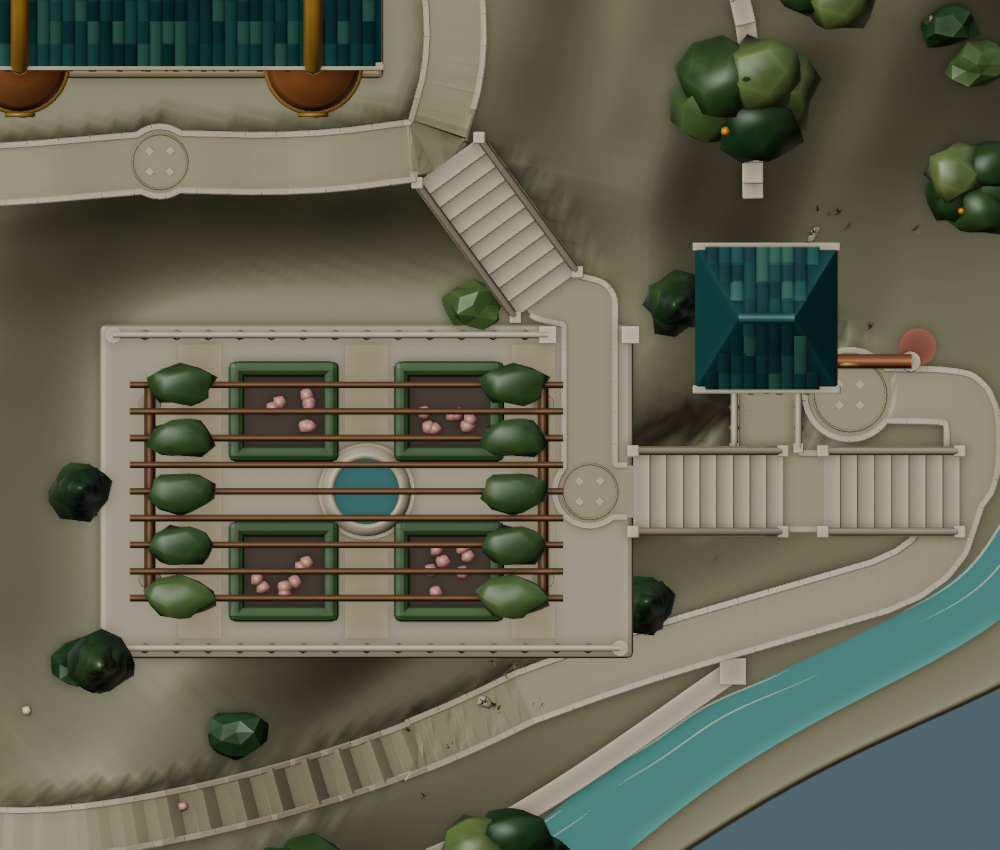
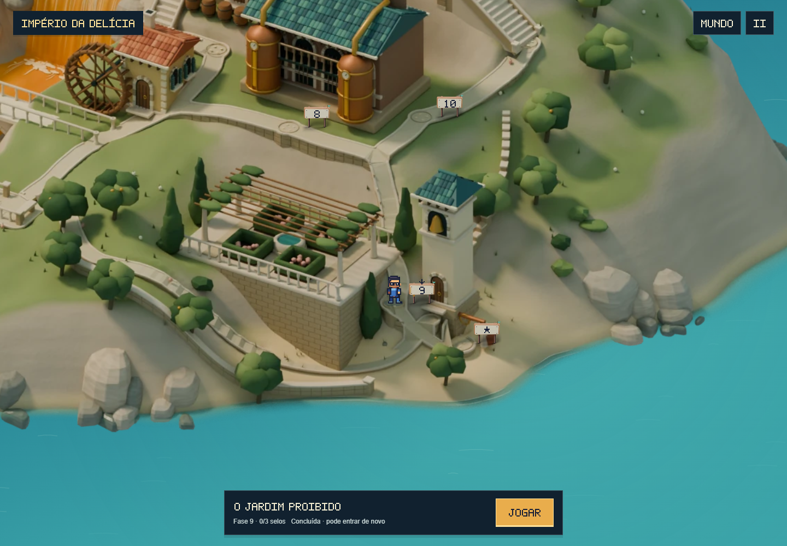
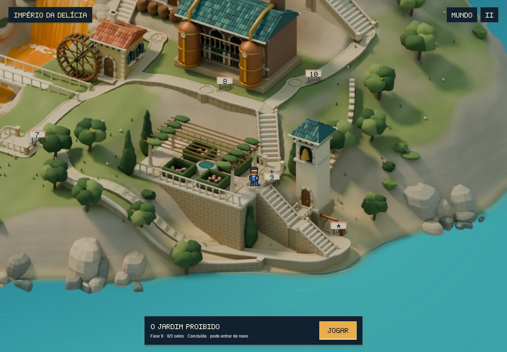
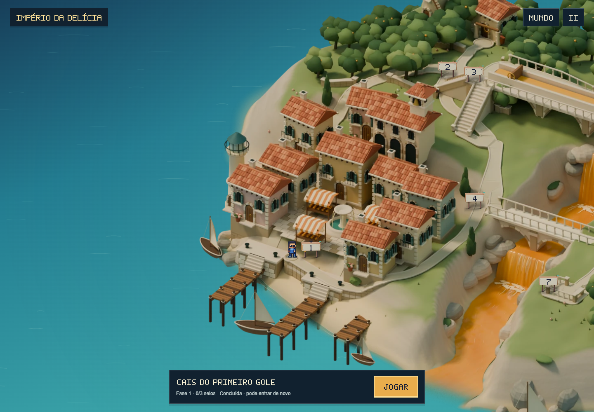
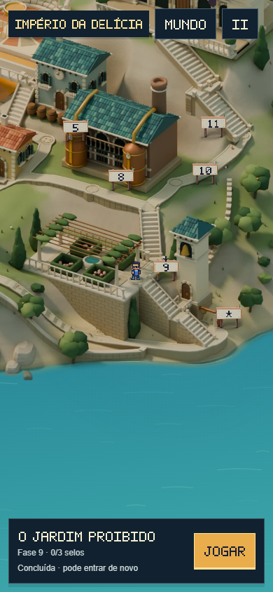

Um caminho que entra no jardim.
Escadas que chegam ao campanário.
A fase 9 agora recebe Feka dentro do jardim. O portão norte, os patamares e as escadas conectam os níveis do terreno, substituindo as rampas torcidas e a chegada que ficava isolada abaixo da plataforma.
Encontros entre jardim, escadas e torre


Antes · v10Agora · v11Mesma câmera de inspeção no Blender. Três lances, com 27 degraus, substituem as descidas deformadas. Um patamar liga a escada à porta da torre, e o passeio da costa encontra o acesso inferior.
Passagens vistas de cima


Antes · v10Agora · v11A abertura na balaustrada corresponde à passagem de Feka. A lateral da pérgola foi recuada como um conjunto — vigas, colunas e folhagem — e a vegetação que invadia os acessos foi replantada.
A chegada no jogo


Antes · v10Agora · v11A câmera acompanha a nova posição da chegada. Feka percorre as escadas e o corredor usando a caminhada do World. O desenho do piso, o trajeto e a profundidade do personagem vêm do mesmo modelo.
Caminhada contínua
Conferência do restante do mapa

No celular
